6 RSE plotting basics with smokingMouse
Instructor: Daianna
## Download data
library("BiocFileCache")
bfc <- BiocFileCache::BiocFileCache()
cached_rse_gene <- BiocFileCache::bfcrpath(
x = bfc,
"https://github.com/LieberInstitute/SPEAQeasyWorkshop2023/raw/devel/provisional_data/rse_gene_mouse_RNAseq_nic-smo.Rdata"
)
## Check the local path on our cache
cached_rse_gene
#> BFC1
#> "/github/home/.cache/R/BiocFileCache/3f04b9f0745_rse_gene_mouse_RNAseq_nic-smo.Rdata"
## Load the rse_gene object
load(cached_rse_gene, verbose = TRUE)
#> Loading objects:
#> rse_gene
## Nicotine data
rse_gene_nic <- rse_gene[ ,which(rse_gene$Expt=='Nicotine')]In this part of the course you’ll have a plotting session in which you’ll learn what type of plots you can create to explore your data, but please note that this is not a differential expression analysis itself. The steps that will be performed are shown in Figure 1. The main objective of this first part is to explore the quality of the samples, their differences in gene expression variations and the impact of sample variables on gene expression variance. You’ll also learn how to visualize gene expression counts.

1. Data preparation
Even before exploring the samples, the first step is to normalize the counts and filter non-expressed genes; we won’t do the processes themselves since we already have normalized and filtered data but let’s check why these steps are important and where to extract the data we need for posterior analyses.
1.1 Data normalization
Data normalization is a primordial step when working with expression data because raw counts do not necessarily reflect real expression measures of the genes since there are technical differences in the way the libraries are prepared and sequenced, as well as intrinsic differences in the genes that are translated into more or less mapping reads. Particularly, there are within-sample effects that are the differences between genes in the same sample, such as their length (the longer the gene, the more reads it will have) and GC content, factors that contribute to variations in their counts. On the other hand, between-sample effects are differences between samples such as the sequencing depth, i.e., the total number of molecules sequenced, and the library size, i.e., the total number of reads of each sample [1].
These variables lead to virtually different mRNA amounts but of course are not due to the biological or treatment conditions of interest (such as nicotine administration in this example) so in order to remove, or at least, to minimize this technical bias and obtain measures comparable and consistent across samples, raw counts must be normalized by these factors. The data that we’ll use in this case are already normalized in assays(rse_gene)$logcounts. Specifically, the assay contains counts per million (CPM), also known as reads per million (RPM), one basic gene expression unit that only normalizes by the sequencing depth and is computed by dividing the read counts of a gene in a sample by a scaling factor given by the total mapping reads of the sample per million [2]:
\[CPM = \frac{read \ \ counts \ \ of \ \ gene \ \ \times \ \ 10^6 }{Total \ \ mapping \ \ reads \ \ of \ \ sample}\]
As outlined in Data overview and download, the scaling factors were obtained with calcNormFactors() applying the Trimmed Mean of M-Values (TMM) method, the edgeR package’s default normalization method that assumes that most genes are not differentially expressed. The effective library sizes of the samples and the CPM of each observation were computed with the edgeR function cpm() setting the log argument to TRUE and prior.count to 0.5 to receive values in \(log_2(CPM+0.5)\).
After data normalization and scaling, we’d expect the read counts to follow a Norm distribution, something we can confirm comparing the counts’ distribution before and after the normalization. Consider both datasets contain the exact same genes.
library(ggplot2)
## Histogram and density plot of read counts before and after normalization
## Raw counts
counts_data <- data.frame(counts=as.vector(assays(rse_gene_nic)$counts))
plot <- ggplot(counts_data, aes(x=counts)) +
geom_histogram(colour="black", fill="lightgray") +
labs(x='read counts', y='Frecuency') +
theme_classic()
plot + theme(plot.margin = unit(c(2,4,2,4), "cm")) 
## Normalized counts
logcounts_data <- data.frame(logcounts=as.vector(assays(rse_gene_nic)$logcounts))
plot <- ggplot(logcounts_data, aes(x=logcounts)) +
geom_histogram(aes(y=..density..), colour="darkgray", fill="lightgray") +
theme_classic() +
geom_density(fill="#69b3a2", alpha=0.3) +
labs(x='log(CPM+0.5)', y='Frecuency')
plot + theme(plot.margin = unit(c(2,4,2,4), "cm")) 
As presented, after data transformation, we can now see a more widespread distribution of the counts, but note that most of them are zeros in the first plot (the one with the raw counts) and those zeros remain after normalization, corresponding to counts below 0 in the second plot. That is because we haven’t filtered the low and zero-expressed genes.
1.2 Gene filtering
Low-expressed or non-expressed genes in many samples are not of biological interest in a study of differential expression because they don’t inform about the gene expression changes and they are, by definition, not differentially expressed, so we have to drop them using filterByExpr() from edgeR that only keeps genes with at least K CPM in n samples and with a minimum total number of counts across all samples.
## Retain genes that passed filtering step
rse_gene_filt <- rse_gene_nic[rowData(rse_gene_nic)$retained_after_feature_filtering==TRUE,]
## Normalized counts and filtered genes
filt_logcounts_data <- data.frame(logcounts=as.vector(assays(rse_gene_filt)$logcounts))
## Plot
plot <- ggplot(filt_logcounts_data, aes(x=logcounts)) +
geom_histogram(aes(y=..density..), colour="darkgray", fill="lightgray") +
theme_classic() +
geom_density(fill="#69b3a2", alpha=0.3) +
labs(x='log(CPM+0.5)', y='Frecuency')
plot + theme(plot.margin = unit(c(2,4,2,4), "cm")) 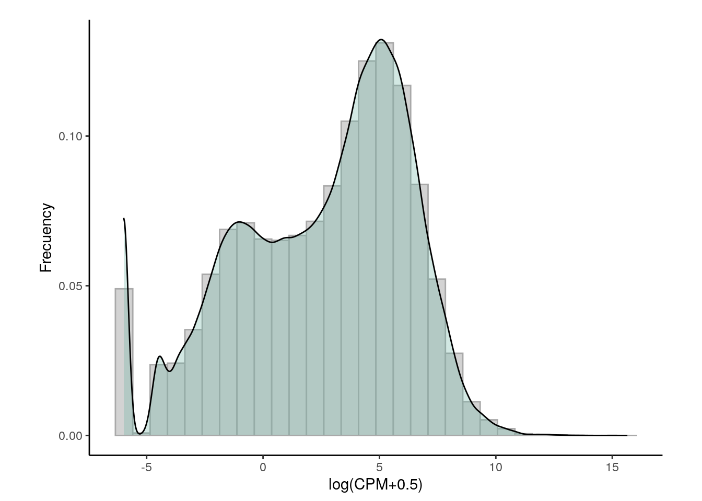
In this third plot we can observe a curve that is closer (though not completely) to a Norm distribution and with less low-expressed genes.
With the object rse_gene_filt we can proceed with downstream analyses.
2. Exploratory Data Analysis
The first formal step that we will be performing is the sample exploration. This crucial initial part of the analysis consists of an examination of differences and relationships between Quality-Control (QC) metrics of the samples from different groups in order to identify poor-quality samples that must be removed before DEA. After that, the sample variables in the meta-data also need to be analyzed and filtered based on the percentage of gene expression variance that they explain for each gene.
2.1 Quality Control Analysis
First we have to explore and compare the the quality-control metrics of the samples in the different groups given by covariates such as age, sex, pregnancy state, group, plate and flowcell. See Sample Information for the description of the variables.
❓ Why is that relevant? As you could imagine, technical and methodological differences in all the steps that were carried out during the experimental stages are potential sources of variation in the quality of the samples. Just imagine all that could have been gone wrong or unexpected while experimenting with mice, during the sampling, in the RNA extraction using different batches, when treating samples in different mediums, when preparing libraries in different plates and sequencing in different flowcells. Moreover, the inherent features of the mice from which the samples come from such as age, tissue, sex and pregnancy state could also affect the samples’ metrics if, for example, they were separately analyzed and processed.
❓But why do we care about mitochodrial and ribosomal counts as QC metrics? In the process of mRNA extraction, either by mRNA enrichment (capturing polyadenilated mRNAs) or rRNA-depletion (removing rRNA), we’d expect to have a low number of ribosomal counts, i.e., counts that map to rDNA, and if we don’t, something must have gone wrong with the procedures. In the case of mitochondrial counts something similar occurs: higher mitochondrial rates will be obtained if the cytoplasmic mRNA capture was deficient or if the transcripts were lost by some technical issue, increasing the proportion of mitochondrial mRNAs. As a result, high mitoRate and rRNA_rate imply poor quality in the samples.
Note: the QC metrics were computed with the unprocessed datasets (neither filtered nor normalized) to preserve the original estimates of the samples.
2.1.1 Evaluate QC metrics for groups of samples
Fortunately, we can identify to some extent possible factors that could have influenced on the quality of the samples, as well as isolated samples that are problematic. To do that, we will create boxplots that present the distribution of the samples’ metrics separating them by sample variables.
library(Hmisc)
library(stringr)
library(cowplot)
## Define QC metrics of interest
qc_metrics <- c('mitoRate', 'overallMapRate', 'totalAssignedGene', 'rRNA_rate', 'sum', 'detected', 'ERCCsumLogErr')
## Define sample variables of interest
sample_variables <- c('Group', 'Age', 'Sex', 'Pregnancy', 'plate', 'flowcell')
## Function to create boxplots of QC metrics for groups of samples
QC_boxplots <- function(qc_metric, sample_var){
## Define sample colors depending on the sample variable
if (sample_var=="Group"){
colors=c('Control'='brown2', 'Experimental'='deepskyblue3')
}
else if (sample_var=="Age"){
colors=c('Adult'='slateblue3', 'Pup'='yellow3')
}
else if (sample_var=="Sex"){
colors=c('F'='hotpink1', 'M'='dodgerblue')
}
else if (sample_var=='Pregnancy'){
colors=c('Yes'='darkorchid3', 'No'='darkolivegreen4')
}
else if (sample_var=='plate'){
colors=c('Plate1'='darkorange', 'Plate2'='lightskyblue', 'Plate3'='deeppink1')
}
else if (sample_var=='flowcell'){
colors=c('HKCG7DSXX'='chartreuse2','HKCMHDSXX'='magenta', 'HKCNKDSXX'='turquoise3',
'HKCTMDSXX'='tomato')
}
## Axis labels
x_label=capitalize(sample_var)
y_label=str_replace_all(qc_metric, c("_"=""))
## x-axis text angle and position
if (sample_var=='flowcell'){
x_axis_angle = 18
x_axis_hjust = 0.5
x_axis_vjust = 0.7
x_axis_size = 4
}
else {
x_axis_angle = 0
x_axis_hjust = 0.5
x_axis_vjust = 0.5
x_axis_size = 6
}
## Extract sample data in colData(rse_gene_filt)
data <- data.frame(colData(rse_gene_filt))
## Sample variable separating samples in x-axis and QC metric in y-axis
## (Coloring by sample variable)
plot <- ggplot(data = data, mapping = aes(x = !! rlang::sym(sample_var), y = !! rlang::sym(qc_metric), color = !! rlang::sym(sample_var))) +
## Add violin plots
geom_violin(alpha = 0, size = 0.4, color='black', width=0.7)+
## Spread dots
geom_jitter(width = 0.08, alpha = 0.7, size = 1.3) +
## Add boxplots
geom_boxplot(alpha = 0, size = 0.4, width=0.1, color='black') +
## Set colors
scale_color_manual(values = colors) +
## Define axis labels
labs(y= y_label, x = x_label) +
## Get rid of the background
theme_bw() +
## Hide legend and define plot margins and size of axis title and text
theme(legend.position = "none",
plot.margin = unit(c(0.5,0.4,0.5,0.4), "cm"),
axis.title = element_text(size = 7),
axis.text = element_text(size = x_axis_size),
axis.text.x = element_text(angle = x_axis_angle, hjust = x_axis_hjust, vjust = x_axis_vjust))
return(plot)
}
## Plots of all QC metrics for each sample variable
multiple_QC_boxplots <- function(sample_var){
i=1
plots = list()
for (qc_metric in qc_metrics) {
## Call function to create each individual plot
plots[[i]]<- QC_boxplots(qc_metric, sample_var)
i=i+1
}
## Arrange multiple plots into a grid
print(plot_grid(plots[[1]], plots[[2]], plots[[3]], plots[[4]], plots[[5]], plots[[6]], plots[[7]], nrow = 2))
}multiple_QC_boxplots('Age')
Initially, when we separate samples by Age, we can appreciate a clear segregation of adult and pup samples in mitoRate , with higher mitochondrial rates for adult samples and thus, being lower quality samples than the pup ones. We can also see that pup samples have higher totalAssignedGene , again being higher quality. The samples are very similar in the rest of the QC metrics. The former differences must be taken into account because they guide further sample separation by Age, which is necessary to avoid dropping most of the adult samples (that are lower quality) in the QC-based sample filtering (see below) and to prevent misinterpreting sample variation given by quality and not by mice age itself.
multiple_QC_boxplots('Sex')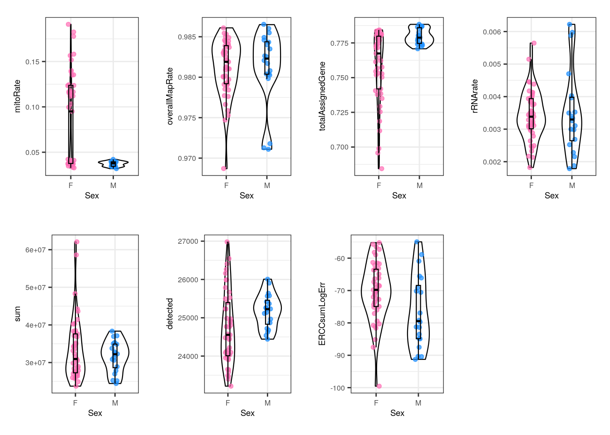
With Sex, female and male samples have similar QC metrics but there are some female samples that have high mitoRate and low totalAssignedGene , but males don´t. That is consistent with the fact that all males are pups and as we previously observed, pup samples present better QC metrics, but since not all pups are males, some female pups also have smaller mitoRate and greater totalAssignedGene . So in this case samples’ differences are actually dictated by Age and not by Sex.
multiple_QC_boxplots('Group')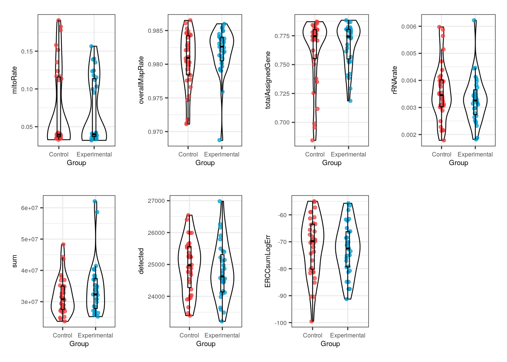
Notably, for Group no evident contrasts are seen in the quality of the samples, which means that both, control and exposed samples have similar metrics and therefore, the differences between them won’t be determined by technical factors but effectively by gene expression changes.
multiple_QC_boxplots('Pregnancy')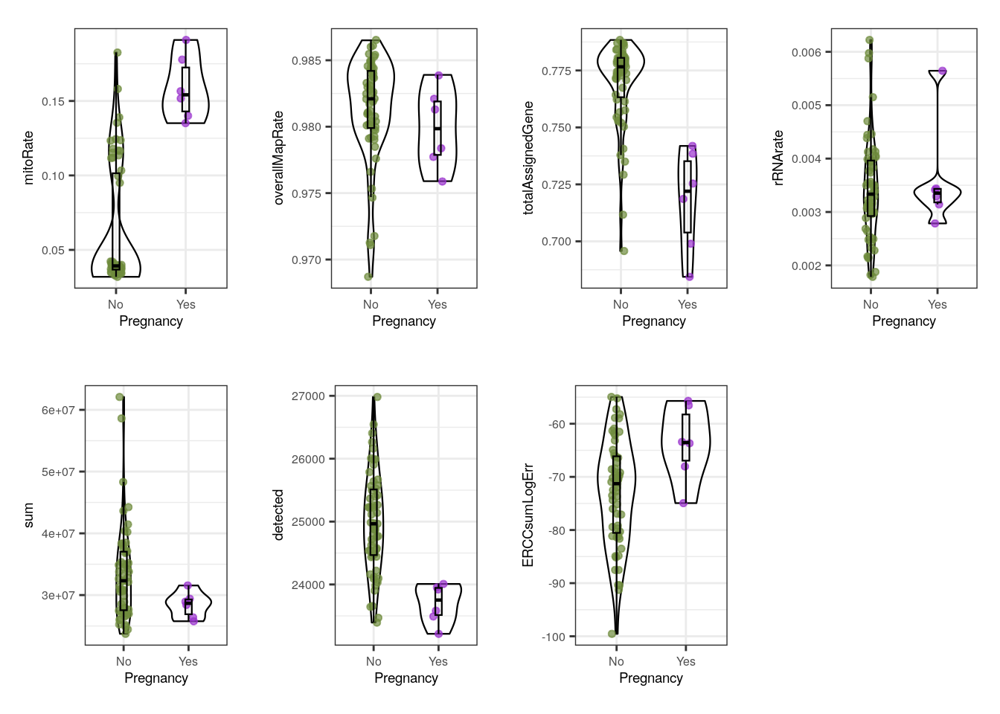
Pregnancy variable is interesting because pregnant dams were obviously females and adults, which we already noted are lower quality. Accordingly to that, pregnant samples present overall higher mitoRate and lower totalAssignedGene , sum (library size) and detected (number of expressed genes) than some samples coming from non-pregnant mice. However, these samples have smaller | ERCCsumLogErr |, which means that they had smaller differences between expected and observed concentrations of control transcripts.
Notwithstanding, we must clarify one more time that as in Sex, the trends observed in Pregnancy are all given by Age: it is Age the variable that fully segregates samples in mitoRate and almost completely in , lower totalAssignedGene . Because all pregnant dams were adults, their metrics will be positioned where the adult samples did, but there were also not pregnant adults that share similar QC values.
multiple_QC_boxplots('plate')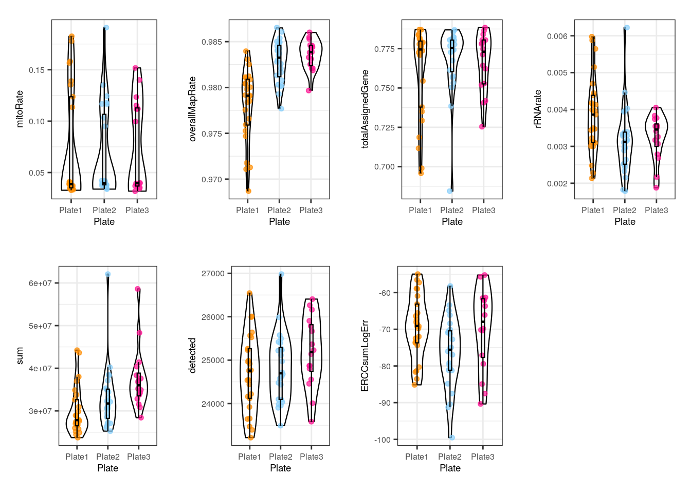
In plate, no alarming differences are presented but some samples from the 1st plate have low (though not much lower) overallMapRate , totalAssignedGene and sum .
multiple_QC_boxplots('flowcell')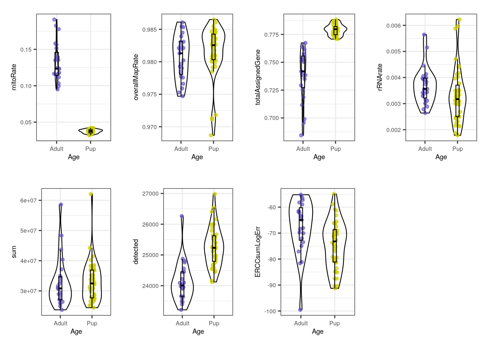
For the flowcell, again not worrying distinctiveness are detected, with the exception of a few individual samples far from the rest.
In all the previous plots we can appreciate a group of samples placed below in mitoRate that correspond to pup samples. The relationship is more fuzzy in totalAssignedGene .
2.1.2 Examine relationships between QC metrics of samples
Secondly, we want to analyze if there are relationships between QC variables that explain the presence of samples with two or more particular QC metrics. For that, scatterplots are useful because they enable the evaluation of pairs of samples’ QC metrics.
## Scatterplots for a pair of QC metrics
QC_scatterplots <- function(sample_var, qc_metric1, qc_metric2){
## Define sample colors
if (sample_var=="Group"){
colors=c('Control'='brown2', 'Experimental'='deepskyblue3')
}
else if (sample_var=="Age"){
colors=c('Adult'='slateblue3', 'Pup'='yellow3')
}
else if (sample_var=="Sex"){
colors=c('F'='hotpink1', 'M'='dodgerblue')
}
else if (sample_var=='Pregnancy'){
colors=c('Yes'='darkorchid3', 'No'='darkolivegreen4')
}
else if (sample_var=='plate'){
colors=c('Plate1'='darkorange', 'Plate2'='lightskyblue', 'Plate3'='deeppink1')
}
else if (sample_var=='flowcell'){
colors=c('HKCG7DSXX'='chartreuse2','HKCMHDSXX'='magenta', 'HKCNKDSXX'='turquoise3',
'HKCTMDSXX'='tomato')
}
data <- colData(rse_gene_filt)
## Scatterplots for continuous variable vs continuous variable
## First QC metric in x-axis and second QC metric in y-axis
plot <- ggplot(as.data.frame(data), aes(x=!! rlang::sym(qc_metric1),
y=!! rlang::sym(qc_metric2),
## Color samples by a variable
color=!! rlang::sym(sample_var))) +
## Add scatterplot
geom_point(size=1) +
## Add regression line
stat_smooth (geom="line", alpha=0.4, size=0.4, span=0.25, method = lm, color='orangered3') +
## Colors
scale_color_manual(name = sample_var, values = colors) +
theme_bw() +
## Add Pearson correlation coefficient between the metrics as subtitle
labs(subtitle = paste0("Corr: ", signif(cor(data[,qc_metric1], data[,qc_metric2], method = "pearson"), digits=3)),
## Add axis labels
y= gsub('_', ' ', qc_metric2),
x = gsub('_', ' ', qc_metric1)) +
## Plot margins and text size
theme(plot.margin=unit (c (0.1,1.2,0.1,1.2), 'cm'),
axis.title = element_text(size = (7)),
axis.text = element_text(size = (6)),
plot.subtitle = element_text(size = 7, color='gray40'),
legend.text = element_text(size=6),
legend.title = element_text(size=7))
return(plot)
}
## QC scatterplots coloring by all sample variables
multiple_QC_scatterplots <- function(qc_metric1, qc_metric2){
sample_variables <- c('Age', 'Sex', 'plate', 'Pregnancy', 'Group', 'flowcell')
i=1
plots = list()
for (sample_var in sample_variables) {
plots[[i]]<- QC_scatterplots(sample_var, qc_metric1, qc_metric2)
i=i+1
}
plot_grid(plots[[1]], plots[[2]], plots[[3]], plots[[4]], plots[[5]], plots[[6]], nrow = 3, rel_widths = c(1,1))
}multiple_QC_scatterplots('mitoRate', 'rRNA_rate')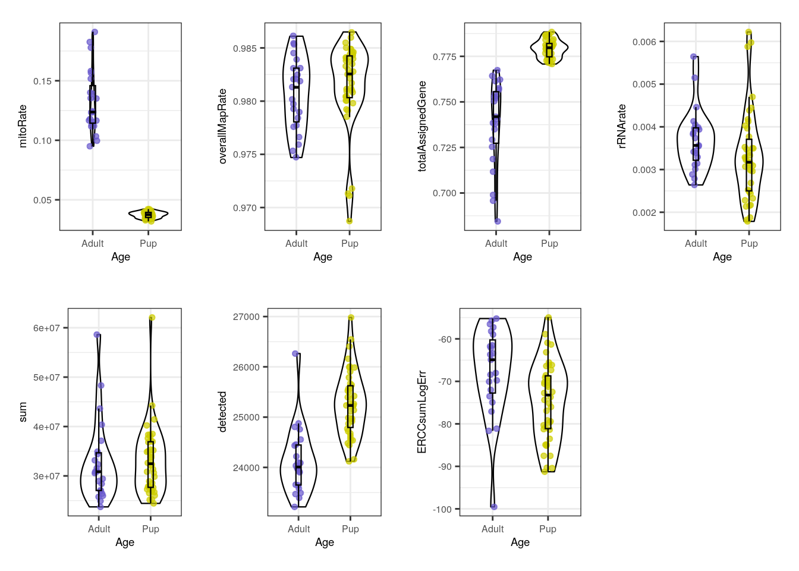
For mitoRate vs rRNA_rate plots there’s a poor positive correlation which was anticipated since no obvious relationship exists between them, though if cytoplasmic mRNAs wouldn’t have been well captured (lowering the total number of mapping reads) we could expect an increase in both mitochondrial and ribosomal rates.
Note the complete separation of samples in mitoRate (but not in rRNA_rate ) by Age, which in turn causes the grouping of male samples (all pups).
multiple_QC_scatterplots('mitoRate', 'totalAssignedGene')
Forcefully, mitoRate and totalAssignedGene have a strong negative correlation, which reveals the existence of very bad quality samples (with small totalAssignedGene and high mitoRate ).
multiple_QC_scatterplots('sum', 'detected')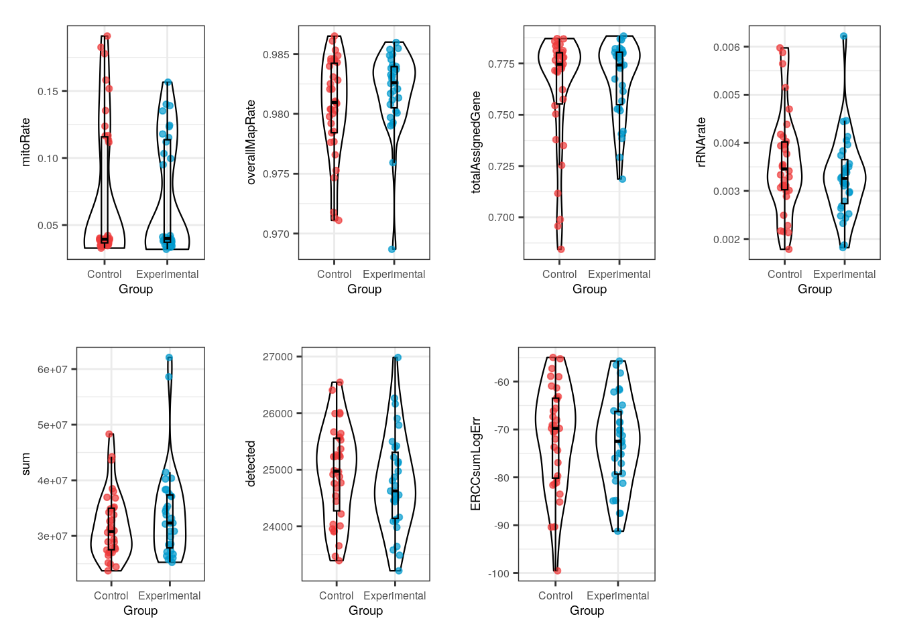 Noticeably, a positive correlation is present for sum and detected and that is also congruent because a higher number of expressed-genes implies bigger library sizes, but that is not necessarily true in the other way around: just a few highly expressed genes (small number of detected genes) could increase the library size. Interestingly, in this case samples are diagonally separated by age.
multiple_QC_scatterplots('sum', 'totalAssignedGene')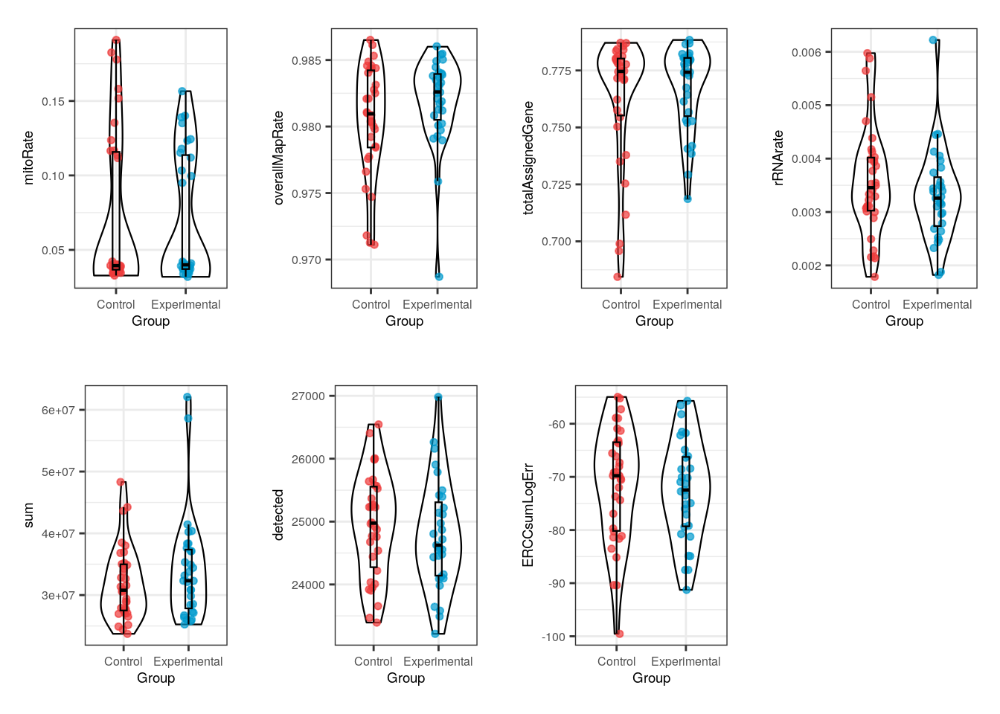
Contrary to expectations, sum is not correlated to totalAssignedGene and it is unexpected because higher proportions of genes’ reads could initially increase library size. However, since totalAssignedGene is a fraction of the total reads, it could be that a high fraction of reads mapping to genes reflects a small number of total reads and do not necessarily implies more expressed genes (and therefore bigger libraries). In other words, even when totalAssignedGene equals 1, if the total number of reads is small, the genes won’t be widely covered by them and the libraries won’t be sizeable. Observe the separarion of samples by Age.
multiple_QC_scatterplots('detected', 'totalAssignedGene')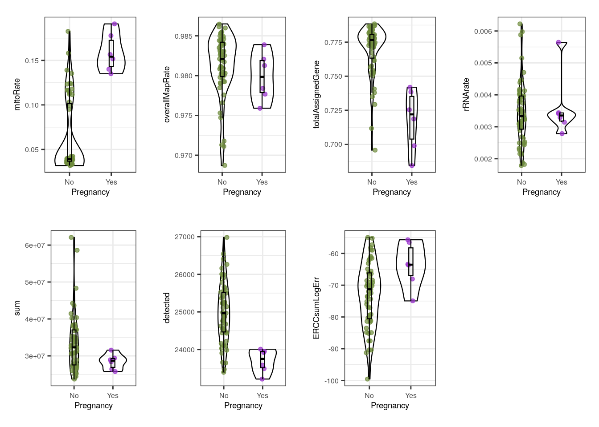
Lastly, there’s a slight positive correlation between totalAssignedGene and detected , which makes sense because reads assigned to genes rise the number of non-zero expressed genes but as mentioned, those genes are not necessarily highly expressed and thus, library sizes are not perforce so much bigger. Also note that the correlation wouldn’t be conserved within pup samples.
Remarkably, samples were not differentiated by any other variable (including Group!) but the differences between adult and pup metrics suggest that they must be splitted into two different groups for the following analyses.
2.1.3 QC sample filtering
After assessing how different or similar are the QC values between samples, we can now proceed to sample filtering based, precisely, on these metrics. For that, we will use isOutlier() from scater to identify outlier samples only at the lower end or the higher end, depending on the QC metric.
library(scater)
library(rlang)
library(ggrepel)
## Separate data by Age
rse_gene_pups<- rse_gene_filt[,which(rse_gene_filt$Age=="Pup")]
rse_gene_adults <- rse_gene_filt[,which(rse_gene_filt$Age=="Adult")]
## Find outlier samples based on their QC metrics (samples that are 3 median-absolute-deviations away from the median)
## Filter all samples together
## Drop samples with lower library sizes (sum), detected number of genes and totalAssignedGene
outliers_library_size <- isOutlier(rse_gene_filt$sum, nmads = 3, type="lower")
outliers_detected_num <- isOutlier(rse_gene_filt$detected, nmads = 3, type="lower")
outliers_totalAssignedGene <- isOutlier(rse_gene_filt$totalAssignedGene, nmads = 3, type="lower")
## Drop samples with higher mitoRates and rRNA rates
outliers_mito<-isOutlier(rse_gene_filt$mitoRate, nmads = 3, type="higher")
outliers_rRNArate <- isOutlier(rse_gene_filt$rRNA_rate, nmads = 3, type="higher")
## Keep not outlier samples
not_outliers<-which(! (outliers_library_size | outliers_detected_num | outliers_totalAssignedGene | outliers_mito | outliers_rRNArate))
rse_gene_qc<-rse_gene_filt[,not_outliers]
## Number of samples retained
dim(rse_gene_qc)[2]
#> [1] 39
## Add new variables to rse_gene_filt with info of samples retained/dropped
rse_gene_filt$Retention_after_QC_filtering <- as.vector(sapply(rse_gene_filt$SAMPLE_ID, function(x){if (x %in% rse_gene_qc$SAMPLE_ID){'Retained'} else{'Dropped'}}))
## Filter adult samples
outliers_library_size <- isOutlier(rse_gene_adults$sum, nmads = 3, type="lower")
outliers_detected_num <- isOutlier(rse_gene_adults$detected, nmads = 3, type="lower")
outliers_totalAssignedGene <- isOutlier(rse_gene_adults$totalAssignedGene, nmads = 3, type="lower")
outliers_mito<-isOutlier(rse_gene_adults$mitoRate, nmads = 3, type="higher")
outliers_rRNArate <- isOutlier(rse_gene_adults$rRNA_rate, nmads = 3, type="higher")
not_outliers<-which(! (outliers_library_size | outliers_detected_num | outliers_totalAssignedGene | outliers_mito | outliers_rRNArate))
rse_gene_adults_qc<-rse_gene_adults[,not_outliers]
## Number of samples retained
dim(rse_gene_adults_qc)[2]
#> [1] 20
rse_gene_adults$Retention_after_QC_filtering <- as.vector(sapply(rse_gene_adults$SAMPLE_ID, function(x){if (x %in% rse_gene_adults_qc$SAMPLE_ID){'Retained'} else{'Dropped'}}))
## Filter pup samples
outliers_library_size <- isOutlier(rse_gene_pups$sum, nmads = 3, type="lower")
outliers_detected_num <- isOutlier(rse_gene_pups$detected, nmads = 3, type="lower")
outliers_totalAssignedGene <- isOutlier(rse_gene_pups$totalAssignedGene, nmads = 3, type="lower")
outliers_mito<-isOutlier(rse_gene_pups$mitoRate, nmads = 3, type="higher")
outliers_rRNArate <- isOutlier(rse_gene_pups$rRNA_rate, nmads = 3, type="higher")
not_outliers<-which(! (outliers_library_size | outliers_detected_num | outliers_totalAssignedGene | outliers_mito | outliers_rRNArate))
rse_gene_pups_qc<-rse_gene_pups[,not_outliers]
## Number of samples retained
dim(rse_gene_pups_qc)[2]
#> [1] 41
rse_gene_pups$Retention_after_QC_filtering <- as.vector(sapply(rse_gene_pups$SAMPLE_ID, function(x){if (x %in% rse_gene_pups_qc$SAMPLE_ID){'Retained'} else{'Dropped'}}))We already filtered outlier samples … but what have we removed? It is always important to trace the QC metrics of the filtered samples to verify that they really are poor-quality. We don’t want to get rid of useful samples! So lets go back to the QC boxplots but now coloring samples according to whether they passed or not the filtering and also distinguishing samples’ groups by shape.
## Boxplots of QC metrics after sample filtering
## Boxplots
boxplots_after_QC_filtering <- function(rse_gene, qc_metric, sample_var){
## Color samples
colors=c('Retained'='deepskyblue', 'Dropped'='brown2')
## Sample shape by sample variables
if (sample_var=="Group"){
shapes=c('Control'=0, 'Experimental'=15)
}
else if (sample_var=="Age"){
shapes=c('Adult'=16, 'Pup'=1)
}
else if (sample_var=="Sex"){
shapes=c('F'=11, 'M'=19)
}
else if (sample_var=='Pregnancy'){
shapes=c('Yes'=10, 'No'=1)
}
else if (sample_var=='plate'){
shapes=c('Plate1'=12, 'Plate2'=5, 'Plate3'=4)
}
else if (sample_var=='flowcell'){
shapes=c('HKCG7DSXX'=3,'HKCMHDSXX'=8, 'HKCNKDSXX'=14,
'HKCTMDSXX'=17)
}
y_label=str_replace_all(qc_metric, c("_"=" "))
data <- data.frame(colData(rse_gene))
## Median of the QC var values
median<-median(eval(parse_expr(paste("rse_gene$", qc_metric, sep=""))))
## Median-absolute-deviation of the QC var values
mad<-mad(eval(parse_expr(paste("rse_gene$", qc_metric, sep=""))))
plot <- ggplot(data = data, mapping = aes(x = '', y = !! rlang::sym(qc_metric),
color = !! rlang::sym('Retention_after_QC_filtering'))) +
geom_jitter(alpha = 1, size = 2, aes(shape=eval(parse_expr((sample_var))))) +
geom_boxplot(alpha = 0, size = 0.15, color='black') +
scale_color_manual(values = colors) +
scale_shape_manual(values = shapes) +
labs(x="", y = y_label, color='Retention after QC filtering', shape=sample_var) +
theme_classic() +
## Median line
geom_hline(yintercept = median, size=0.5) +
## Line of median + 3 MADs
geom_hline(yintercept = median+(3*mad), size=0.5, linetype=2) +
## Line of median - 3 MADs
geom_hline(yintercept = median-(3*mad), size=0.5, linetype=2) +
theme(axis.title = element_text(size = (9)),
axis.text = element_text(size = (8)),
legend.position="right",
legend.text = element_text(size=8),
legend.title = element_text(size=9))
return(plot)
}In the following plot we can confirm that taking all samples together (both adults and pups) all adult samples are dropped by their high mitoRate , but that is not desirable because we want to analyze these samples too, so we need to analyze pup and adult samples separately.
## Plots
## All samples together
p <- boxplots_after_QC_filtering(rse_gene_filt, 'mitoRate', 'Age')
p + theme(plot.margin=unit (c (2,4,2,4), 'cm'))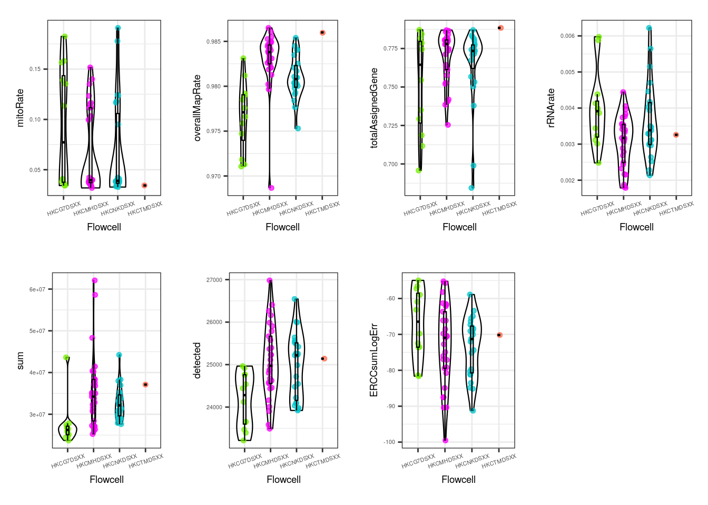 For adults, only 3 controls are dropped, 3 of them by their mitoRate .
## Adult samples
p <- boxplots_after_QC_filtering(rse_gene_adults, 'mitoRate', 'Group')
p + theme(plot.margin=unit (c (2,4,2,4), 'cm'))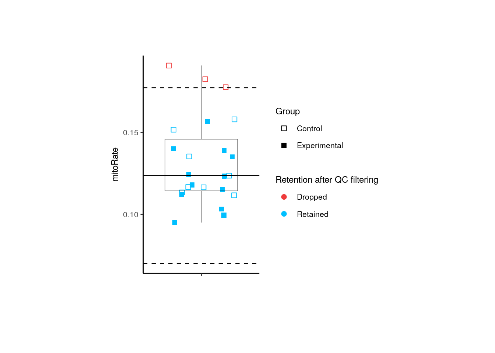
For pups, 1 experimental sample was dropped by its rRNA_rate .
## Pup samples
p <- boxplots_after_QC_filtering(rse_gene_pups, 'rRNA_rate', 'Group')
p + theme(plot.margin=unit (c (2,4,2,4), 'cm'))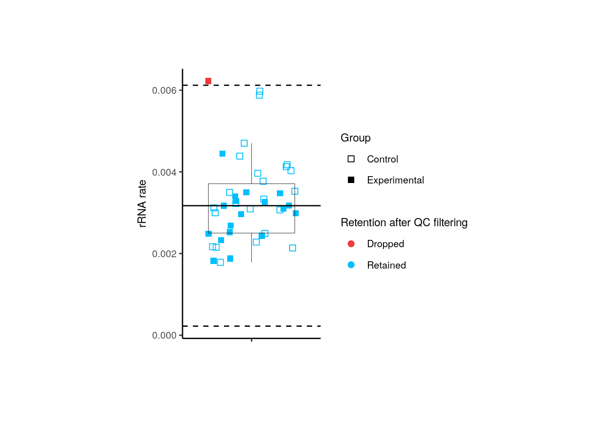
📑 Exercise: Were the filtered samples from males or females? From which plates and flowcells? In what other QC metrics some samples were considered poor quality?
Try the function yourself with different QC metrics and sample variables!
#> ─ Session info ───────────────────────────────────────────────────────────────────────────────────────────────────────
#> setting value
#> version R version 4.3.0 (2023-04-21)
#> os Ubuntu 22.04.2 LTS
#> system x86_64, linux-gnu
#> ui X11
#> language (EN)
#> collate en_US.UTF-8
#> ctype en_US.UTF-8
#> tz UTC
#> date 2023-06-28
#> pandoc 2.19.2 @ /usr/local/bin/ (via rmarkdown)
#>
#> ─ Packages ───────────────────────────────────────────────────────────────────────────────────────────────────────────
#> package * version date (UTC) lib source
#> AnnotationDbi 1.62.1 2023-05-02 [1] Bioconductor
#> AnnotationHub 3.8.0 2023-04-25 [1] Bioconductor
#> aod 1.3.2 2022-04-02 [1] RSPM (R 4.3.0)
#> attempt 0.3.1 2020-05-03 [1] RSPM (R 4.3.0)
#> backports 1.4.1 2021-12-13 [1] RSPM (R 4.3.0)
#> base64enc 0.1-3 2015-07-28 [2] RSPM (R 4.3.0)
#> beachmat 2.16.0 2023-04-25 [1] Bioconductor
#> beeswarm 0.4.0 2021-06-01 [1] RSPM (R 4.3.0)
#> benchmarkme 1.0.8 2022-06-12 [1] RSPM (R 4.3.0)
#> benchmarkmeData 1.0.4 2020-04-23 [1] RSPM (R 4.3.0)
#> bibtex 0.5.1 2023-01-26 [1] RSPM (R 4.3.0)
#> Biobase * 2.60.0 2023-04-25 [1] Bioconductor
#> BiocFileCache * 2.8.0 2023-04-25 [1] Bioconductor
#> BiocGenerics * 0.46.0 2023-04-25 [1] Bioconductor
#> BiocIO 1.10.0 2023-04-25 [1] Bioconductor
#> BiocManager 1.30.21 2023-06-10 [1] RSPM (R 4.3.0)
#> BiocNeighbors 1.18.0 2023-04-25 [1] Bioconductor
#> BiocParallel * 1.34.2 2023-05-22 [1] Bioconductor
#> BiocSingular 1.16.0 2023-04-25 [1] Bioconductor
#> BiocStyle * 2.28.0 2023-04-25 [1] Bioconductor
#> biocthis * 1.10.3 2023-06-07 [1] Bioconductor
#> BiocVersion 3.17.1 2022-11-04 [2] Bioconductor
#> Biostrings 2.68.1 2023-05-16 [1] Bioconductor
#> bit 4.0.5 2022-11-15 [1] RSPM (R 4.3.0)
#> bit64 4.0.5 2020-08-30 [1] RSPM (R 4.3.0)
#> bitops 1.0-7 2021-04-24 [1] RSPM (R 4.3.0)
#> blob 1.2.4 2023-03-17 [1] RSPM (R 4.3.0)
#> bookdown 0.34 2023-05-09 [1] RSPM (R 4.3.0)
#> boot 1.3-28.1 2022-11-22 [3] CRAN (R 4.3.0)
#> broom 1.0.5 2023-06-09 [1] RSPM (R 4.3.0)
#> bslib 0.5.0 2023-06-09 [2] RSPM (R 4.3.0)
#> cachem 1.0.8 2023-05-01 [2] RSPM (R 4.3.0)
#> caTools 1.18.2 2021-03-28 [1] RSPM (R 4.3.0)
#> checkmate 2.2.0 2023-04-27 [1] RSPM (R 4.3.0)
#> circlize 0.4.15 2022-05-10 [1] RSPM (R 4.3.0)
#> cli 3.6.1 2023-03-23 [2] RSPM (R 4.3.0)
#> clue 0.3-64 2023-01-31 [1] RSPM (R 4.3.0)
#> cluster 2.1.4 2022-08-22 [3] CRAN (R 4.3.0)
#> codetools 0.2-19 2023-02-01 [3] CRAN (R 4.3.0)
#> colorspace 2.1-0 2023-01-23 [1] RSPM (R 4.3.0)
#> colourpicker 1.2.0 2022-10-28 [1] RSPM (R 4.3.0)
#> ComplexHeatmap * 2.16.0 2023-04-25 [1] Bioconductor
#> config 0.3.1 2020-12-17 [1] RSPM (R 4.3.0)
#> cowplot * 1.1.1 2020-12-30 [1] RSPM (R 4.3.0)
#> crayon 1.5.2 2022-09-29 [2] RSPM (R 4.3.0)
#> curl 5.0.1 2023-06-07 [2] RSPM (R 4.3.0)
#> data.table 1.14.8 2023-02-17 [1] RSPM (R 4.3.0)
#> DBI 1.1.3 2022-06-18 [1] RSPM (R 4.3.0)
#> dbplyr * 2.3.2 2023-03-21 [1] RSPM (R 4.3.0)
#> DelayedArray 0.26.3 2023-05-22 [1] Bioconductor
#> DelayedMatrixStats 1.22.1 2023-06-09 [1] Bioconductor
#> digest 0.6.32 2023-06-26 [2] RSPM (R 4.3.0)
#> doParallel 1.0.17 2022-02-07 [1] RSPM (R 4.3.0)
#> dotCall64 1.0-2 2022-10-03 [1] RSPM (R 4.3.0)
#> dplyr 1.1.2 2023-04-20 [1] RSPM (R 4.3.0)
#> dqrng 0.3.0 2021-05-01 [1] RSPM (R 4.3.0)
#> DropletUtils 1.20.0 2023-04-25 [1] Bioconductor
#> DT 0.28 2023-05-18 [1] RSPM (R 4.3.0)
#> edgeR * 3.42.4 2023-05-31 [1] Bioconductor
#> ellipsis 0.3.2 2021-04-29 [2] RSPM (R 4.3.0)
#> EnvStats 2.7.0 2022-03-07 [1] RSPM (R 4.3.0)
#> evaluate 0.21 2023-05-05 [2] RSPM (R 4.3.0)
#> ExperimentHub 2.8.0 2023-04-25 [1] Bioconductor
#> ExploreModelMatrix * 1.12.0 2023-04-25 [1] Bioconductor
#> fansi 1.0.4 2023-01-22 [2] RSPM (R 4.3.0)
#> farver 2.1.1 2022-07-06 [1] RSPM (R 4.3.0)
#> fastmap 1.1.1 2023-02-24 [2] RSPM (R 4.3.0)
#> fields 14.1 2022-08-12 [1] RSPM (R 4.3.0)
#> filelock 1.0.2 2018-10-05 [1] RSPM (R 4.3.0)
#> foreach 1.5.2 2022-02-02 [1] RSPM (R 4.3.0)
#> foreign 0.8-84 2022-12-06 [3] CRAN (R 4.3.0)
#> Formula 1.2-5 2023-02-24 [1] RSPM (R 4.3.0)
#> fs 1.6.2 2023-04-25 [2] RSPM (R 4.3.0)
#> generics 0.1.3 2022-07-05 [1] RSPM (R 4.3.0)
#> GenomeInfoDb * 1.36.1 2023-06-21 [1] Bioconductor
#> GenomeInfoDbData 1.2.10 2023-05-17 [1] Bioconductor
#> GenomicAlignments 1.36.0 2023-04-25 [1] Bioconductor
#> GenomicRanges * 1.52.0 2023-04-25 [1] Bioconductor
#> GetoptLong 1.0.5 2020-12-15 [1] RSPM (R 4.3.0)
#> ggbeeswarm 0.7.2 2023-04-29 [1] RSPM (R 4.3.0)
#> ggplot2 * 3.4.2 2023-04-03 [1] RSPM (R 4.3.0)
#> ggrepel * 0.9.3 2023-02-03 [1] RSPM (R 4.3.0)
#> GlobalOptions 0.1.2 2020-06-10 [1] RSPM (R 4.3.0)
#> glue 1.6.2 2022-02-24 [2] RSPM (R 4.3.0)
#> golem 0.4.1 2023-06-05 [1] RSPM (R 4.3.0)
#> gplots 3.1.3 2022-04-25 [1] RSPM (R 4.3.0)
#> gridExtra 2.3 2017-09-09 [1] RSPM (R 4.3.0)
#> gtable 0.3.3 2023-03-21 [1] RSPM (R 4.3.0)
#> gtools 3.9.4 2022-11-27 [1] RSPM (R 4.3.0)
#> HDF5Array 1.28.1 2023-05-01 [1] Bioconductor
#> here * 1.0.1 2020-12-13 [1] RSPM (R 4.3.0)
#> highr 0.10 2022-12-22 [2] RSPM (R 4.3.0)
#> Hmisc * 5.1-0 2023-05-08 [1] RSPM (R 4.3.0)
#> hms 1.1.3 2023-03-21 [1] RSPM (R 4.3.0)
#> htmlTable 2.4.1 2022-07-07 [1] RSPM (R 4.3.0)
#> htmltools 0.5.5 2023-03-23 [2] RSPM (R 4.3.0)
#> htmlwidgets 1.6.2 2023-03-17 [2] RSPM (R 4.3.0)
#> httpuv 1.6.11 2023-05-11 [2] RSPM (R 4.3.0)
#> httr 1.4.6 2023-05-08 [2] RSPM (R 4.3.0)
#> igraph 1.5.0 2023-06-16 [1] RSPM (R 4.3.0)
#> interactiveDisplayBase 1.38.0 2023-04-25 [1] Bioconductor
#> IRanges * 2.34.1 2023-06-22 [1] Bioconductor
#> irlba 2.3.5.1 2022-10-03 [1] RSPM (R 4.3.0)
#> iSEE * 2.12.0 2023-04-25 [1] Bioconductor
#> iterators 1.0.14 2022-02-05 [1] RSPM (R 4.3.0)
#> jquerylib 0.1.4 2021-04-26 [2] RSPM (R 4.3.0)
#> jsonlite 1.8.5 2023-06-05 [2] RSPM (R 4.3.0)
#> KEGGREST 1.40.0 2023-04-25 [1] Bioconductor
#> KernSmooth 2.23-21 2023-05-03 [3] RSPM (R 4.3.0)
#> knitr 1.43 2023-05-25 [2] RSPM (R 4.3.0)
#> labeling 0.4.2 2020-10-20 [1] RSPM (R 4.3.0)
#> later 1.3.1 2023-05-02 [2] RSPM (R 4.3.0)
#> lattice 0.21-8 2023-04-05 [3] CRAN (R 4.3.0)
#> lazyeval 0.2.2 2019-03-15 [1] RSPM (R 4.3.0)
#> lifecycle 1.0.3 2022-10-07 [2] RSPM (R 4.3.0)
#> limma * 3.56.2 2023-06-04 [1] Bioconductor
#> lme4 1.1-33 2023-04-25 [1] RSPM (R 4.3.0)
#> lobstr * 1.1.2 2022-06-22 [1] RSPM (R 4.3.0)
#> locfit 1.5-9.8 2023-06-11 [1] RSPM (R 4.3.0)
#> lubridate 1.9.2 2023-02-10 [1] RSPM (R 4.3.0)
#> magick 2.7.4 2023-03-09 [1] RSPM (R 4.3.0)
#> magrittr 2.0.3 2022-03-30 [2] RSPM (R 4.3.0)
#> maps 3.4.1 2022-10-30 [1] RSPM (R 4.3.0)
#> MASS 7.3-60 2023-05-04 [3] RSPM (R 4.3.0)
#> Matrix 1.5-4.1 2023-05-18 [3] RSPM (R 4.3.0)
#> MatrixGenerics * 1.12.2 2023-06-09 [1] Bioconductor
#> matrixStats * 1.0.0 2023-06-02 [1] RSPM (R 4.3.0)
#> memoise 2.0.1 2021-11-26 [2] RSPM (R 4.3.0)
#> mgcv 1.8-42 2023-03-02 [3] CRAN (R 4.3.0)
#> mime 0.12 2021-09-28 [2] RSPM (R 4.3.0)
#> miniUI 0.1.1.1 2018-05-18 [2] RSPM (R 4.3.0)
#> minqa 1.2.5 2022-10-19 [1] RSPM (R 4.3.0)
#> munsell 0.5.0 2018-06-12 [1] RSPM (R 4.3.0)
#> mvtnorm 1.2-2 2023-06-08 [1] RSPM (R 4.3.0)
#> nlme 3.1-162 2023-01-31 [3] CRAN (R 4.3.0)
#> nloptr 2.0.3 2022-05-26 [1] RSPM (R 4.3.0)
#> nnet 7.3-19 2023-05-03 [3] RSPM (R 4.3.0)
#> paletteer 1.5.0 2022-10-19 [1] RSPM (R 4.3.0)
#> patchwork * 1.1.2 2022-08-19 [1] RSPM (R 4.3.0)
#> pbkrtest 0.5.2 2023-01-19 [1] RSPM (R 4.3.0)
#> pheatmap * 1.0.12 2019-01-04 [1] RSPM (R 4.3.0)
#> pillar 1.9.0 2023-03-22 [2] RSPM (R 4.3.0)
#> pkgconfig 2.0.3 2019-09-22 [2] RSPM (R 4.3.0)
#> plotly 4.10.2 2023-06-03 [1] RSPM (R 4.3.0)
#> plyr 1.8.8 2022-11-11 [1] RSPM (R 4.3.0)
#> png 0.1-8 2022-11-29 [1] RSPM (R 4.3.0)
#> postcards * 0.2.3 2022-01-07 [1] RSPM (R 4.3.0)
#> prettyunits 1.1.1 2020-01-24 [2] RSPM (R 4.3.0)
#> progress 1.2.2 2019-05-16 [1] RSPM (R 4.3.0)
#> promises 1.2.0.1 2021-02-11 [2] RSPM (R 4.3.0)
#> purrr 1.0.1 2023-01-10 [2] RSPM (R 4.3.0)
#> R.cache 0.16.0 2022-07-21 [1] RSPM (R 4.3.0)
#> R.methodsS3 1.8.2 2022-06-13 [1] RSPM (R 4.3.0)
#> R.oo 1.25.0 2022-06-12 [1] RSPM (R 4.3.0)
#> R.utils 2.12.2 2022-11-11 [1] RSPM (R 4.3.0)
#> R6 2.5.1 2021-08-19 [2] RSPM (R 4.3.0)
#> rappdirs 0.3.3 2021-01-31 [2] RSPM (R 4.3.0)
#> rbibutils 2.2.13 2023-01-13 [1] RSPM (R 4.3.0)
#> RColorBrewer * 1.1-3 2022-04-03 [1] RSPM (R 4.3.0)
#> Rcpp 1.0.10 2023-01-22 [2] RSPM (R 4.3.0)
#> RCurl 1.98-1.12 2023-03-27 [1] RSPM (R 4.3.0)
#> Rdpack 2.4 2022-07-20 [1] RSPM (R 4.3.0)
#> recount3 * 1.10.2 2023-05-07 [1] Bioconductor
#> RefManageR * 1.4.0 2022-09-30 [1] RSPM (R 4.3.0)
#> remaCor 0.0.16 2023-06-21 [1] RSPM (R 4.3.0)
#> rematch2 2.1.2 2020-05-01 [2] RSPM (R 4.3.0)
#> reshape2 1.4.4 2020-04-09 [1] RSPM (R 4.3.0)
#> restfulr 0.0.15 2022-06-16 [1] RSPM (R 4.3.0)
#> rhdf5 2.44.0 2023-04-25 [1] Bioconductor
#> rhdf5filters 1.12.1 2023-04-30 [1] Bioconductor
#> Rhdf5lib 1.22.0 2023-04-25 [1] Bioconductor
#> RhpcBLASctl 0.23-42 2023-02-11 [1] RSPM (R 4.3.0)
#> rintrojs 0.3.2 2022-08-09 [1] RSPM (R 4.3.0)
#> rjson 0.2.21 2022-01-09 [1] RSPM (R 4.3.0)
#> rlang * 1.1.1 2023-04-28 [2] RSPM (R 4.3.0)
#> rmarkdown 2.22 2023-06-01 [2] RSPM (R 4.3.0)
#> rpart 4.1.19 2022-10-21 [3] CRAN (R 4.3.0)
#> rprojroot 2.0.3 2022-04-02 [2] RSPM (R 4.3.0)
#> Rsamtools 2.16.0 2023-04-25 [1] Bioconductor
#> RSQLite 2.3.1 2023-04-03 [1] RSPM (R 4.3.0)
#> rstudioapi 0.14 2022-08-22 [2] RSPM (R 4.3.0)
#> rsvd 1.0.5 2021-04-16 [1] RSPM (R 4.3.0)
#> rtracklayer 1.60.0 2023-04-25 [1] Bioconductor
#> S4Arrays 1.0.4 2023-05-14 [1] Bioconductor
#> S4Vectors * 0.38.1 2023-05-02 [1] Bioconductor
#> sass 0.4.6 2023-05-03 [2] RSPM (R 4.3.0)
#> ScaledMatrix 1.8.1 2023-05-03 [1] Bioconductor
#> scales 1.2.1 2022-08-20 [1] RSPM (R 4.3.0)
#> scater * 1.28.0 2023-04-25 [1] Bioconductor
#> scuttle * 1.10.1 2023-05-02 [1] Bioconductor
#> sessioninfo * 1.2.2 2021-12-06 [2] RSPM (R 4.3.0)
#> shape 1.4.6 2021-05-19 [1] RSPM (R 4.3.0)
#> shiny 1.7.4 2022-12-15 [2] RSPM (R 4.3.0)
#> shinyAce 0.4.2 2022-05-06 [1] RSPM (R 4.3.0)
#> shinydashboard 0.7.2 2021-09-30 [1] RSPM (R 4.3.0)
#> shinyjs 2.1.0 2021-12-23 [1] RSPM (R 4.3.0)
#> shinyWidgets 0.7.6 2023-01-08 [1] RSPM (R 4.3.0)
#> SingleCellExperiment * 1.22.0 2023-04-25 [1] Bioconductor
#> smokingMouse * 0.99.5 2023-06-28 [1] Github (LieberInstitute/smokingMouse@2e7640c)
#> spam 2.9-1 2022-08-07 [1] RSPM (R 4.3.0)
#> sparseMatrixStats 1.12.1 2023-06-20 [1] Bioconductor
#> SpatialExperiment * 1.10.0 2023-04-25 [1] Bioconductor
#> spatialLIBD * 1.12.0 2023-04-27 [1] Bioconductor
#> statmod 1.5.0 2023-01-06 [1] RSPM (R 4.3.0)
#> stringi 1.7.12 2023-01-11 [2] RSPM (R 4.3.0)
#> stringr * 1.5.0 2022-12-02 [2] RSPM (R 4.3.0)
#> styler 1.10.1 2023-06-05 [1] RSPM (R 4.3.0)
#> SummarizedExperiment * 1.30.2 2023-06-06 [1] Bioconductor
#> tibble 3.2.1 2023-03-20 [2] RSPM (R 4.3.0)
#> tidyr 1.3.0 2023-01-24 [1] RSPM (R 4.3.0)
#> tidyselect 1.2.0 2022-10-10 [1] RSPM (R 4.3.0)
#> timechange 0.2.0 2023-01-11 [1] RSPM (R 4.3.0)
#> usethis * 2.2.1 2023-06-23 [2] RSPM (R 4.3.0)
#> utf8 1.2.3 2023-01-31 [2] RSPM (R 4.3.0)
#> variancePartition * 1.30.2 2023-06-07 [1] Bioconductor
#> vctrs 0.6.3 2023-06-14 [2] RSPM (R 4.3.0)
#> vipor 0.4.5 2017-03-22 [1] RSPM (R 4.3.0)
#> viridis 0.6.3 2023-05-03 [1] RSPM (R 4.3.0)
#> viridisLite 0.4.2 2023-05-02 [1] RSPM (R 4.3.0)
#> withr 2.5.0 2022-03-03 [2] RSPM (R 4.3.0)
#> xfun 0.39 2023-04-20 [2] RSPM (R 4.3.0)
#> XML 3.99-0.14 2023-03-19 [1] RSPM (R 4.3.0)
#> xml2 1.3.4 2023-04-27 [2] RSPM (R 4.3.0)
#> xtable 1.8-4 2019-04-21 [2] RSPM (R 4.3.0)
#> XVector 0.40.0 2023-04-25 [1] Bioconductor
#> yaml 2.3.7 2023-01-23 [2] RSPM (R 4.3.0)
#> zlibbioc 1.46.0 2023-04-25 [1] Bioconductor
#>
#> [1] /__w/_temp/Library
#> [2] /usr/local/lib/R/site-library
#> [3] /usr/local/lib/R/library
#>
#> ──────────────────────────────────────────────────────────────────────────────────────────────────────────────────────